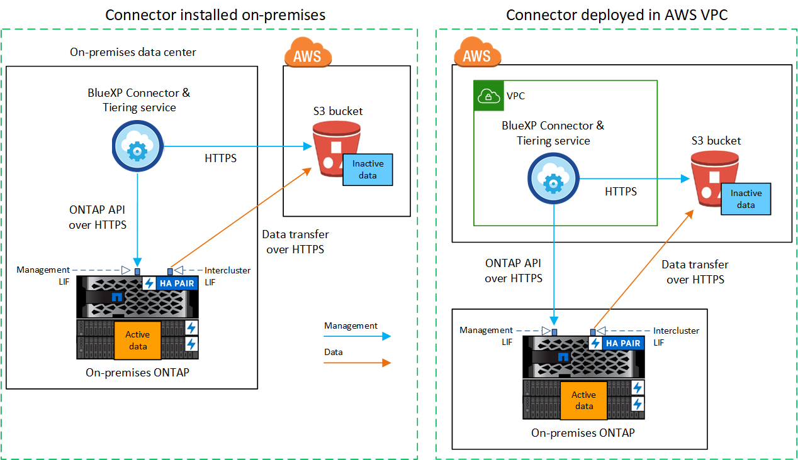
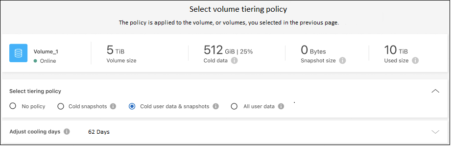

Commencez
Commencez
Tiering des données depuis des clusters ONTAP sur site vers Amazon S3
 Suggérer des modifications
Suggérer des modifications
Libérez de l'espace sur vos clusters ONTAP sur site grâce au Tiering des données inactives vers Amazon S3.
Démarrage rapide
Suivez ces étapes pour démarrer rapidement. Les sections suivantes de cette rubrique contiennent des informations détaillées sur chaque étape.
 Identifier la méthode de configuration que vous utiliserez
Identifier la méthode de configuration que vous utiliserezIndiquez si vous connecterez votre cluster ONTAP sur site directement à AWS S3 via Internet public, ou si vous utiliserez un VPN ou AWS Direct Connect et acheminez le trafic via une interface de terminal VPC privée vers AWS S3.
 Préparez votre connecteur BlueXP
Préparez votre connecteur BlueXPSi votre connecteur est déjà déployé dans votre VPC AWS ou sur votre site, cela vous permettra d'être configuré. Si ce n'est pas le cas, vous devez créer un connecteur pour transférer les données ONTAP vers une solution de stockage AWS S3. Vous devez également personnaliser les paramètres réseau du connecteur pour qu'il puisse se connecter à AWS S3.
 Préparez votre cluster ONTAP sur site
Préparez votre cluster ONTAP sur siteDécouvrez votre cluster ONTAP dans BlueXP, vérifiez que le cluster répond à ses exigences minimales et personnalisez les paramètres réseau pour que le cluster puisse se connecter à AWS S3.
 Préparez Amazon S3 en tant que cible de Tiering
Préparez Amazon S3 en tant que cible de TieringConfigurez les autorisations pour le connecteur afin de créer et de gérer le compartiment S3. Vous devez également configurer des autorisations pour le cluster ONTAP sur site afin qu'il puisse lire et écrire les données dans le compartiment S3.
 Activez le Tiering BlueXP sur le système
Activez le Tiering BlueXP sur le systèmeSélectionnez un environnement de travail sur site, cliquez sur Activer pour le service Tiering, puis suivez les invites pour hiérarchiser les données vers Amazon S3.
 Configuration des licences
Configuration des licencesÀ la fin de votre essai gratuit, payez le Tiering BlueXP via un abonnement avec paiement à l'utilisation, une licence ONTAP BlueXP Tiering BYOL ou une combinaison des deux :
-
Pour vous abonner à AWS Marketplace, "Accédez à l'offre BlueXP Marketplace", Cliquez sur s'abonner, puis suivez les invites.
-
Pour payer avec une licence BYOL de Tiering BlueXP, contactez-nous si vous avez besoin d'en acheter un, puis "Ajoutez-le à votre compte depuis le portefeuille digital BlueXP".
Schémas réseau pour les options de connexion
Deux méthodes de connexion sont disponibles pour la configuration du Tiering à partir des systèmes ONTAP sur site vers AWS S3.
-
Connexion publique : connectez directement le système ONTAP à AWS S3 à l'aide d'un terminal public S3.
-
Connexion privée : utilisez une connexion VPN ou AWS Direct Connect et acheminez le trafic via une interface VPC Endpoint qui utilise une adresse IP privée.
Le schéma suivant montre la méthode connexion publique et les connexions que vous devez préparer entre les composants. Vous pouvez utiliser un connecteur que vous avez installé sur votre site ou un connecteur que vous avez déployé dans le VPC AWS.

Le schéma suivant montre la méthode connexion privée et les connexions que vous devez préparer entre les composants. Vous pouvez utiliser un connecteur que vous avez installé sur votre site ou un connecteur que vous avez déployé dans le VPC AWS.


|
La communication entre un connecteur et S3 est destinée uniquement à la configuration du stockage objet. |
Préparez votre connecteur
Le connecteur BlueXP est le logiciel principal pour la fonctionnalité BlueXP. Un connecteur est nécessaire pour effectuer le Tiering des données ONTAP inactives.
Création ou commutation de connecteurs
Si votre connecteur est déjà déployé dans votre VPC AWS ou sur votre site, cela vous permettra d'être configuré. Si ce n'est pas le cas, vous devez créer un connecteur dans l'un de ces emplacements pour transférer les données ONTAP vers une solution de stockage AWS S3. Vous ne pouvez pas utiliser un connecteur déployé dans un autre fournisseur de cloud.
Exigences de mise en réseau des connecteurs
-
Assurez-vous que le réseau sur lequel le connecteur est installé active les connexions suivantes :
-
Connexion HTTPS sur le port 443 vers le service de Tiering BlueXP et vers votre stockage objet S3 ("voir la liste des noeuds finaux")
-
Une connexion HTTPS via le port 443 vers votre LIF de gestion de cluster ONTAP
-
-
"Assurez-vous que le connecteur dispose des autorisations nécessaires pour gérer le compartiment S3"
-
Si vous disposez d'une connexion Direct Connect ou VPN entre votre cluster ONTAP et le VPC, et que vous souhaitez que la communication entre le connecteur et S3 reste dans votre réseau interne AWS (une connexion privée), vous devez activer une interface de terminal VPC vers S3. Découvrez comment configurer une interface de terminal VPC.
Préparez votre cluster ONTAP
Lors du Tiering des données vers Amazon S3, vos clusters ONTAP doivent répondre aux exigences suivantes.
Conditions requises pour le ONTAP
- Plateformes ONTAP prises en charge
-
-
Si vous utilisez ONTAP 9.8 et version ultérieure, vous pouvez classer les données depuis les systèmes AFF, ou encore les systèmes FAS avec des agrégats 100 % SSD ou des agrégats 100 % disques durs.
-
Avec ONTAP 9.7 et les versions antérieures, vous pouvez transférer les données depuis des systèmes AFF ou vers des systèmes FAS avec des agrégats 100 % SSD.
-
- Versions de ONTAP prises en charge
-
-
ONTAP 9.2 ou version ultérieure
-
ONTAP 9.7 ou version ultérieure est requis si vous prévoyez d'utiliser une connexion AWS PrivateLink avec le stockage objet
-
- Volumes et agrégats pris en charge
-
Le nombre total de volumes que le Tiering BlueXP peut hiérarchiser peut être inférieur au nombre de volumes de votre système ONTAP. En effet, certains volumes ne peuvent pas être hiérarchisés à partir de certains agrégats. Consultez la documentation ONTAP de "Fonctionnalité ou fonctionnalités non prises en charge par FabricPool".
|
|
Le Tiering BlueXP prend en charge les volumes FlexGroup à partir de ONTAP 9.5. Le réglage fonctionne de la même façon que tout autre volume. |
Configuration requise pour la mise en réseau des clusters
-
Le cluster nécessite une connexion HTTPS entrante depuis le connecteur jusqu'à la LIF de cluster management.
Une connexion entre le cluster et le service de Tiering BlueXP n'est pas requise.
-
Un LIF intercluster est nécessaire sur chaque nœud ONTAP qui héberge les volumes que vous souhaitez mettre en niveau. Ces LIFs intercluster doivent pouvoir accéder au magasin d'objets.
Le cluster établit une connexion HTTPS sortante via le port 443 entre les LIF intercluster et le stockage Amazon S3 pour le Tiering des opérations. ONTAP lit et écrit les données depuis et vers le stockage objet.- le système de stockage objet n'démarre jamais, il répond simplement.
-
Les LIFs intercluster doivent être associées au IPspace que ONTAP doit utiliser pour se connecter au stockage objet. "En savoir plus sur les IPspaces".
Lorsque vous configurez le Tiering BlueXP, vous êtes invité à utiliser l'IPspace. Vous devez choisir l'IPspace auquel ces LIF sont associées. Il peut s'agir de l'IPspace par défaut ou d'un IPspace personnalisé que vous avez créé.
Si vous utilisez un IPspace différent de celui de « par défaut », vous devrez peut-être créer une route statique pour obtenir l'accès au stockage objet.
Toutes les LIF intercluster au sein de l'IPspace doivent avoir accès au magasin d'objets. Si vous ne pouvez pas configurer cela pour l'IPspace actuel, vous devrez créer un IPspace dédié où toutes les LIF intercluster ont accès au magasin d'objets.
-
Si vous utilisez un terminal VPC privé dans AWS pour la connexion S3, vous devez charger le certificat de terminal S3 dans le cluster ONTAP pour pouvoir utiliser HTTPS/443. Découvrez comment configurer une interface de terminal VPC et charger le certificat S3.
-
Assurez-vous que votre cluster ONTAP possède des autorisations d'accès au compartiment S3.
Découvrez votre cluster ONTAP dans BlueXP
Vous devez découvrir votre cluster ONTAP sur site dans BlueXP avant de commencer le Tiering des données inactives vers le stockage objet. Vous devez connaître l'adresse IP de gestion du cluster et le mot de passe permettant au compte utilisateur admin d'ajouter le cluster.
Préparez votre environnement AWS
Lorsque vous configurez le Tiering des données pour un nouveau cluster, vous êtes invité à indiquer si vous souhaitez que le service crée un compartiment S3 ou si vous souhaitez sélectionner un compartiment S3 existant dans le compte AWS sur lequel le connecteur est configuré. Le compte AWS doit avoir des autorisations et une clé d'accès que vous pouvez entrer dans le Tiering BlueXP. Le cluster ONTAP utilise la clé d'accès pour classer les données entrantes et sortantes de S3.
Par défaut, le service de Tiering crée le compartiment à votre place. Si vous souhaitez utiliser votre propre compartiment, vous pouvez en créer un avant de démarrer l'assistant d'activation du Tiering, puis sélectionner ce compartiment dans l'assistant. "Découvrez comment créer des compartiments S3 à partir de BlueXP". Le compartiment doit être exclusivement utilisé pour stocker les données inactives de vos volumes. Il ne peut pas être utilisé à d'autres fins. Le compartiment S3 doit être dans un "Région qui prend en charge le Tiering BlueXP".
|
|
Si vous prévoyez de configurer le Tiering BlueXP pour utiliser une classe de stockage moins coûteuse à laquelle vos données hiérarchisées seront transférées au bout d'un certain nombre de jours, vous ne devez sélectionner aucune règle de cycle de vie lors de la configuration du compartiment dans votre compte AWS. Le Tiering BlueXP gère les transitions de cycle de vie. |
Configurez les autorisations S3
Vous devez configurer deux ensembles d'autorisations :
-
Autorisations pour le connecteur afin qu'il puisse créer et gérer le compartiment S3.
-
Autorisations relatives au cluster ONTAP sur site afin de pouvoir lire et écrire les données dans le compartiment S3.
-
Autorisations de connecteur :
-
Confirmez-le "Ces autorisations S3" Font partie du rôle IAM qui fournit au connecteur des autorisations. Ils doivent avoir été inclus par défaut lorsque vous avez déployé le connecteur pour la première fois. Si ce n'est pas le cas, vous devrez ajouter les autorisations manquantes. Voir la "Documentation AWS : modification des règles IAM" pour obtenir des instructions.
-
Le compartiment par défaut créé par le Tiering BlueXP comporte le préfixe « fabric-pool ». Si vous souhaitez utiliser un préfixe différent pour votre compartiment, vous devez personnaliser les autorisations avec le nom que vous souhaitez utiliser. Dans les autorisations S3, une ligne s'affiche
"Resource": ["arn:aws:s3:::fabric-pool*"]. Vous devrez remplacer « fabric-pool » par le préfixe que vous souhaitez utiliser. Par exemple, si vous souhaitez utiliser le préfixe « Tiering-1 » pour vos compartiments, vous définissez cette ligne sur"Resource": ["arn:aws:s3:::tiering-1*"].Si vous souhaitez utiliser un préfixe différent pour les compartiments que vous utiliserez pour d'autres clusters de ce même compte BlueXP, vous pouvez ajouter une autre ligne avec le préfixe pour les autres compartiments. Par exemple :
"Resource": ["arn:aws:s3:::tiering-1*"]
"Resource": ["arn:aws:s3:::tiering-2*"]
Si vous créez votre propre compartiment et n'utilisez pas de préfixe standard, vous devez modifier cette ligne en
"Resource": ["arn:aws:s3:::*"]pour que tout godet soit reconnu. Cependant, cela peut exposer tous vos compartiments à la place de ceux que vous avez conçus pour conserver les données inactives de vos volumes. -
-
Autorisations du cluster :
-
Lors de l'activation du service, l'assistant Tiering vous invite à entrer une clé d'accès et une clé secrète. Ces identifiants sont transmis au cluster ONTAP afin que ONTAP puisse hiérarchiser les données dans le compartiment S3. Pour cela, vous devrez créer un utilisateur IAM avec les autorisations suivantes :
"s3:ListAllMyBuckets", "s3:ListBucket", "s3:GetBucketLocation", "s3:GetObject", "s3:PutObject", "s3:DeleteObject"Voir la "Documentation AWS : création d'un rôle pour déléguer des autorisations à un utilisateur IAM" pour plus d'informations.
-
-
Créez ou localisez la clé d'accès.
Le Tiering BlueXP transmet la clé d'accès au cluster ONTAP. Les identifiants ne sont pas stockés dans le service de Tiering BlueXP.
Configurez votre système pour une connexion privée à l'aide d'une interface de terminal VPC
Si vous prévoyez d'utiliser une connexion Internet publique standard, toutes les autorisations sont définies par le connecteur et rien d'autre n'est nécessaire. Ce type de connexion est indiqué dans le premier diagramme ci-dessus.
Si vous voulez établir une connexion plus sécurisée via Internet entre votre data Center sur site et le VPC, vous pouvez choisir une connexion AWS PrivateLink dans l'assistant d'activation de Tiering. Elle est indispensable pour connecter votre système sur site à l'aide d'un VPN ou d'AWS Direct Connect via une interface de terminal VPC qui utilise une adresse IP privée. Ce type de connexion est indiqué dans le deuxième diagramme ci-dessus.
-
Créez une configuration de point final de l'interface à l'aide de la console Amazon VPC ou de la ligne de commande. "Pour plus d'informations sur l'utilisation d'AWS PrivateLink pour Amazon S3, reportez-vous à la section".
-
Modifiez la configuration du groupe de sécurité associée au connecteur BlueXP. Vous devez modifier la règle en « personnalisé » (à partir de « accès complet ») et vous devez Ajoutez les autorisations de connecteur S3 requises comme indiqué précédemment.

Si vous utilisez le port 80 (HTTP) pour la communication avec le noeud final privé, vous êtes tous définis. Vous pouvez activer le Tiering BlueXP sur le cluster.
Si vous utilisez le port 443 (HTTPS) pour la communication avec le terminal privé, vous devez copier le certificat depuis le terminal VPC S3 et l'ajouter à votre cluster ONTAP, comme indiqué dans les 4 étapes suivantes.
-
Obtenir le nom DNS du noeud final à partir de la console AWS.

-
Obtenir le certificat à partir du terminal VPC S3 Vous faites ceci par "Se connecter à la machine virtuelle qui héberge le connecteur BlueXP" et exécutant la commande suivante. Lors de la saisie du nom DNS du noeud final, ajoutez "compartiment" au début, en remplaçant le "*" :
[ec2-user@ip-10-160-4-68 ~]$ openssl s_client -connect bucket.vpce-0ff5c15df7e00fbab-yxs7lt8v.s3.us-west-2.vpce.amazonaws.com:443 -showcerts -
Dans le résultat de cette commande, copiez les données du certificat S3 (toutes les données entre et, y compris, les balises DE DÉBUT et DE FIN DU CERTIFICAT) :
Certificate chain 0 s:/CN=s3.us-west-2.amazonaws.com` i:/C=US/O=Amazon/OU=Server CA 1B/CN=Amazon -----BEGIN CERTIFICATE----- MIIM6zCCC9OgAwIBAgIQA7MGJ4FaDBR8uL0KR3oltTANBgkqhkiG9w0BAQsFADBG … … GqvbOz/oO2NWLLFCqI+xmkLcMiPrZy+/6Af+HH2mLCM4EsI2b+IpBmPkriWnnxo= -----END CERTIFICATE----- -
Connectez-vous à l'interface de ligne de commandes du cluster ONTAP et appliquez le certificat que vous avez copié à l'aide de la commande suivante (remplacez votre propre nom de VM de stockage) :
cluster1::> security certificate install -vserver <svm_name> -type server-ca Please enter Certificate: Press <Enter> when done
Déplacez les données inactives de votre premier cluster vers Amazon S3
Une fois votre environnement AWS prêt, commencez le Tiering des données inactives à partir du premier cluster.
-
Clé d'accès AWS pour un utilisateur IAM qui dispose des autorisations S3 requises.
-
Sélectionnez l'environnement de travail ONTAP sur site.
-
Cliquez sur Activer pour le service Tiering dans le panneau de droite.
Si la destination de Tiering Amazon S3 existe en tant qu'environnement de travail sur la Canvas, vous pouvez faire glisser le cluster vers l'environnement de travail pour lancer l'assistant d'installation.

-
Définir le nom de stockage d'objet : saisissez un nom pour ce stockage d'objet. Il doit être unique à partir de tout autre stockage objet que vous pouvez utiliser avec des agrégats sur ce cluster.
-
Sélectionnez fournisseur : sélectionnez Amazon Web Services et cliquez sur Continuer.

-
Complétez les sections de la page Tiering Setup :
-
Compartiment S3 : ajoutez un nouveau compartiment S3 ou sélectionnez un compartiment S3 existant, sélectionnez la région du compartiment et cliquez sur Continuer.
Lorsque vous utilisez un connecteur sur site, vous devez saisir l'ID de compte AWS qui donne accès au compartiment S3 existant ou au nouveau compartiment S3 à créer.
Le préfixe fabric-pool est utilisé par défaut, car la règle IAM du connecteur permet à l'instance d'effectuer des actions S3 sur les compartiments nommés avec ce préfixe exact. Par exemple, vous pouvez nommer le compartiment S3 fabric-pool-AFF1, où AFF1 est le nom du cluster. Vous pouvez également définir le préfixe des compartiments utilisés pour la hiérarchisation. Voir Configuration des autorisations S3 Garantir que vous disposez des autorisations AWS qui reconnaissent tout préfixe personnalisé que vous prévoyez d'utiliser.
-
Classe de stockage : le Tiering BlueXP gère les transitions de cycle de vie de vos données hiérarchisées. Les données commencent dans la classe Standard, mais vous pouvez créer une règle pour appliquer une classe de stockage différente aux données après un certain nombre de jours.
Sélectionnez la classe de stockage S3 vers laquelle vous souhaitez transférer les données hiérarchisées et le nombre de jours avant l'attribution des données à cette classe, puis cliquez sur Continuer. Par exemple, la capture d'écran ci-dessous montre que des données hiérarchisées sont affectées à la classe Standard-IA de la classe Standard après 45 jours dans le stockage objet.
Si vous choisissez conserver les données dans cette classe de stockage, les données restent dans la classe de stockage Standard et aucune règle n'est appliquée. "Voir classes de stockage prises en charge".

Notez que la règle de cycle de vie est appliquée à tous les objets du compartiment sélectionné.
-
Informations d'identification : saisissez l'ID de clé d'accès et la clé secrète pour un utilisateur IAM disposant des autorisations S3 requises, puis cliquez sur Continuer.
L'utilisateur IAM doit se trouver dans le même compte AWS que le compartiment que vous avez sélectionné ou créé sur la page compartiment S3.
-
Réseau : saisissez les détails de la mise en réseau et cliquez sur Continuer.
Sélectionnez l'IPspace dans le cluster ONTAP où les volumes doivent résider. Les LIF intercluster de cet IPspace doivent disposer d'un accès Internet sortant afin que les utilisateurs puissent se connecter au stockage objet de votre fournisseur cloud.
Vous pouvez également choisir d'utiliser AWS PrivateLink que vous avez configuré précédemment. Voir les informations de configuration ci-dessus. Une boîte de dialogue s'affiche pour vous guider dans la configuration du point final.
Vous pouvez également définir la bande passante réseau disponible pour télécharger des données inactives vers un stockage objet en définissant le « taux de transfert maximal ». Sélectionnez le bouton radio Limited et saisissez la bande passante maximale utilisable, ou sélectionnez Unlimited pour indiquer qu'il n'y a pas de limite.
-
-
Sur la page Tier volumes, sélectionnez les volumes que vous souhaitez configurer le Tiering et lancez la page Tiering Policy :
-
Pour sélectionner tous les volumes, cochez la case dans la ligne de titre (
 ) Et cliquez sur configurer les volumes.
) Et cliquez sur configurer les volumes. -
Pour sélectionner plusieurs volumes, cochez la case pour chaque volume (
 ) Et cliquez sur configurer les volumes.
) Et cliquez sur configurer les volumes. -
Pour sélectionner un seul volume, cliquez sur la ligne (ou
 icône) du volume.
icône) du volume.
-
-
Dans la boîte de dialogue Tiering Policy, sélectionnez une règle de hiérarchisation, vous pouvez éventuellement ajuster les jours de refroidissement des volumes sélectionnés, puis cliquez sur Apply.

Vous avez configuré le Tiering des données à partir des volumes du cluster vers le stockage objet S3.
"N'oubliez pas de vous abonner au service de Tiering BlueXP".
Vous pouvez vérifier les informations concernant les données actives et inactives sur le cluster. "En savoir plus sur la gestion de vos paramètres de hiérarchisation".
Vous pouvez également créer un autre stockage objet, lorsque vous souhaitez hiérarchiser les données issues de certains agrégats d'un cluster vers plusieurs magasins d'objets. Ou si vous prévoyez d'utiliser la mise en miroir FabricPool où vos données hiérarchisées sont répliquées vers un magasin d'objets supplémentaire. "En savoir plus sur la gestion des magasins d'objets".